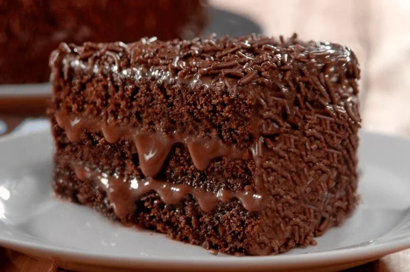

Ingradientes para a massa:
- 3 ovos,
- 1 xicara de açúcar,
- 1 xicara de chocolate em pó,
- 2 xicaras de farinha de trigo,
- 1 xicara de óleo,
- 1 xicara de água fervendo,
- 1 colher de sopa de fermento em pó para bolo.
Misture os secos primeiro (açúcar, chocolate em pó, farinha de trigo);
Em seguida, adicione os ovos e o óleo;
Por último, coloque a água fervendo e o fermento e, com tudo misturado e homogêneo, leve ao forno e asse por 40min à 180°C.
Ingradientes para a cobertura:
- 1 colher de manteiga/margarina;
- 3 colheres de chocolate em pó;
- 3 colheres de açúcar;
- 5 colheres de leite.
Modo de preparo:
Em fogo médio, misture todos os ingredientes até ficar homogeneo. Despeje sobre o bolo enquanto estiver quente ainda.